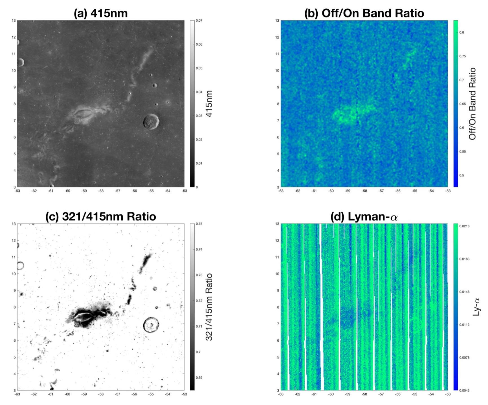

About Me

Education: I graduated with Honors from Johns Hopkins University in 2022 with an M.S. in Applied Physics. I graduated from the University of Kentucky in 2019 with a B.S. in Mathematics and a B.A. in Physics.
Research Interests: I am interested in computational geophysics, particularly modeling, simulations, and data fusion.
Publications: Google Scholar, ORCiD
Research

Lunar Swirls
I currently work with Dr. Joshua Cahill at the Johns Hopkins University Applied Physics Laboratory (APL) studying lunar magnetism and UV-visible spectroscopy. I focus on the intersection of these observations to interpret how space weathering manifests upon the lunar regolith. Above is an animation I created of a potential "miniature magnetosphere" generated by the Reiner Gamma magnetic anomaly undergoing compression by varying solar wind dynamic pressure, which exposes the underlying regolith to high energy particles that may unevenly weather the surface, creating the associated photometric anomaly. Below is another visualization of Reiner Gamma from my thesis work using four ultraviolet datasets from the Lunar Reconnaissance Orbiter (LRO) Wide Angle Camera and Lyman-Alpha Mapping Project.

Global Lunar Magnetics Map
I previously worked with Dr. Dhananjay Ravat at the University of Kentucky, using Clementine and Lunar Prospector (LP) data to produce high resolution maps of the lunar swirl named Reiner Gamma (seen below). I created models of the crustal magnetic anomaly associated with this lunar swirl to constrain the subsurface geometry of the source, in pursuit of understanding the formation of the anomaly. We also created a highly refined dataset from the LP magnetometer to apply a new inversion technique and produce a high-resolution global map of magnetic anomalies on the lunar surface.
Global Martian Magnetics Map
During my time with Dr. Ravat, I also processed MAVEN magnetometer data to help produce a global map of the Martian magnetosphere. I combined and refined monthly downlinks of MAVEN data, and mentored two students who joined the lab when I was a senior.

Contact
I am open to collaboration for research and outreach, please reach out at any of the links below!